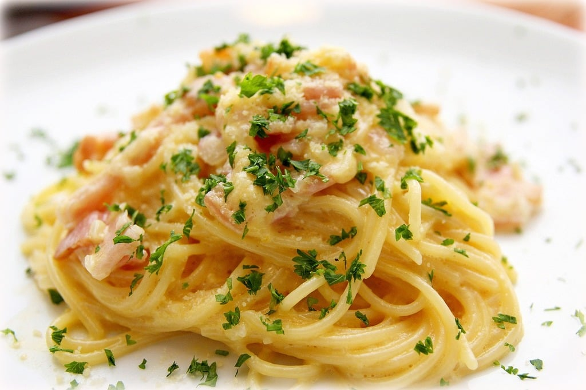

Pasta Carbonara

Description
Carbonara combines pasta, cream, egg, bacon, and parmesan. What's not to love?
If done right, it's a heavenly dish that fits for lunch or dinner, cold or warm weather.
Plus, it's quick and simple to make.
Ingredients
- Spaghetti
- Cream
- Bacon
- Egg
- Parmesan
- Black peppar
Steps
-
Boil spaghetti in saltwater. Once cooked, remove water and leave the pasta in a sill.
-
Fry bacon in a frying pan. Add pasta to the pan. Add cream and plenty of parmesan, preferably grated. Stir everything.
-
Remove the eggwhite and add only the egg yolk to the pasta-cream-bacon-cheese mix in the frying pan. Stir and fry until the eggyolk starts to solidify.
-
Serve on a plate, add plenty of fresh pepper and some basil leaves. Voilà!